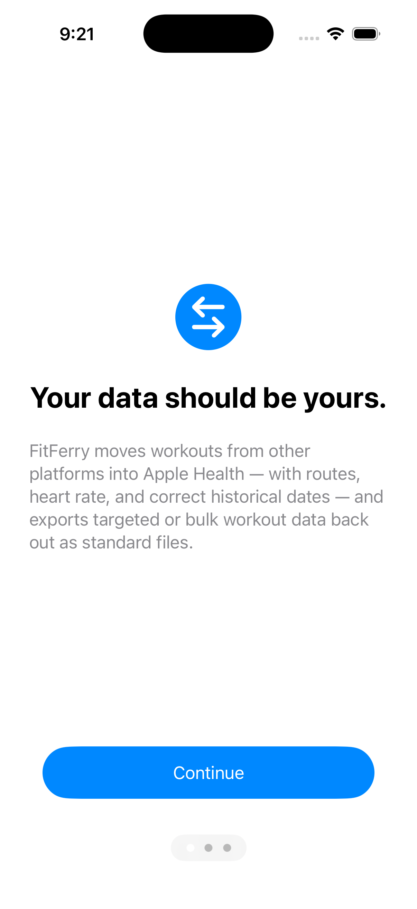

Import
Bring GPX, TCX, and FIT files into Apple Health as genuine historical workouts, with real past dates, GPS routes, and heart rate.
FitFerry moves GPX, TCX, and FIT files into Apple Health and back out again. On your device, on your terms.
Download on the App Storeplaceholder for the official badgeFree unlimited exports plus 3 imports to test. $2.99 once for unlimited imports. No subscription, no account.

App screenshotThe runs, rides, and swims you've logged over the years belong to you, not to whichever platform holds them. FitFerry moves them into Apple Health and back out again, whenever you like. All of it happens on your device: no servers, no accounts, no analytics. The only place your data goes is where you send it.
Bring GPX, TCX, and FIT files into Apple Health as genuine historical workouts, with real past dates, GPS routes, and heart rate.
Drop in a whole platform export, like a Strava or Garmin zip, and bring your entire history over in one pass.
See exactly what a file carries before you import it: dates, route points, heart rate, and everything else inside.
Take workouts out of Apple Health as GPX or TCX files. Filter, multi-select, and export as many as you like. Export is always unlimited.
No account to create, no server to trust. Your files and your health data are processed on your iPhone or iPad and nowhere else.
Three imports to check that your files land exactly right, plus unlimited export.
Happy with the test run? Unlock unlimited imports and bring everything over. Not a subscription.
Purchases are handled by Apple through the App Store. There is nothing else to buy. Questions? See the FAQ.